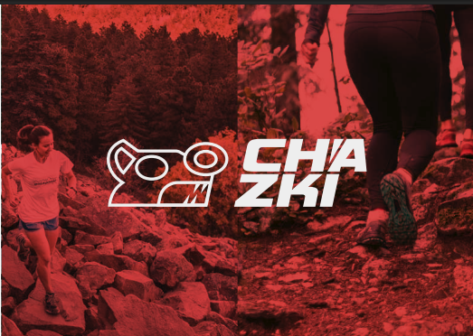

PROYECTO 01 // BRANDİNG
CHAZKİ
"İDENTİDAD VİSUAL & INDUMENTARİA DEPORTİVA"
Construcción integral de marca deportiva de alto rendimiento inspirada en la velocidad y resistencia andina. Desarrollo de isotipo geométrico, tipografía customizada y aplicación sobre indumentaria atlética y calzado.
TECNOLOGÍAS & HERRAMİENTAS
ADOBE İLLUSTRATOR / PHOTOSHOP / MOCKUP 3D / DİRECCİÓN DE ARTE